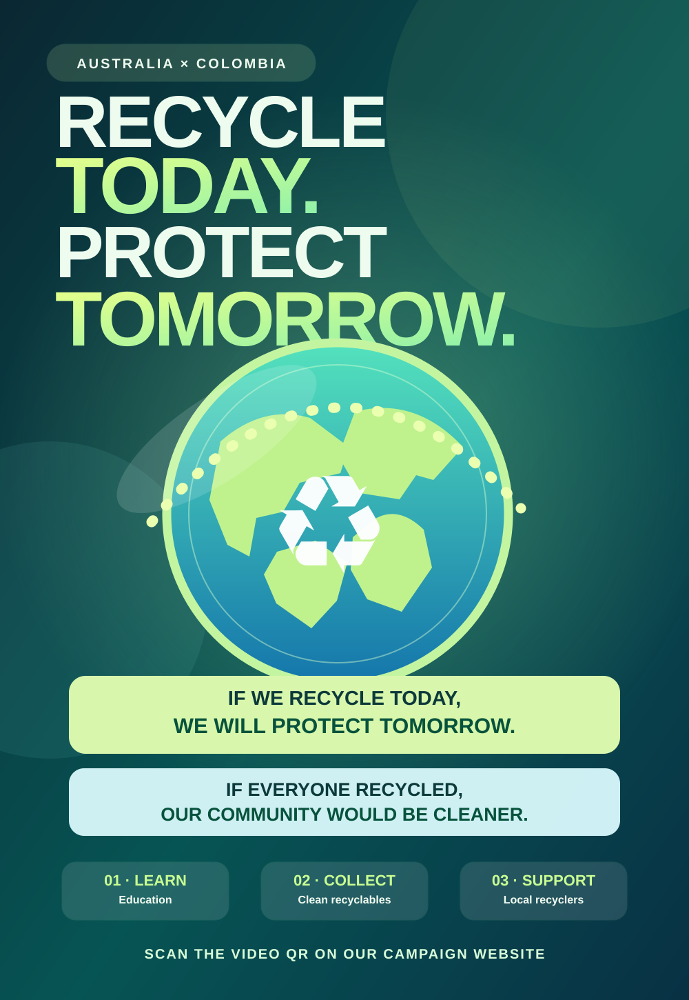

📍
Open interactive map ↗Where is Canberra?
Capital city of Australia
Intercultural English project • 2026
🇦🇺 ↔ 🇨🇴 AUSTRALIA × COLOMBIA
What can Colombia learn from Australia? Small actions today, a cleaner community tomorrow.

01 / 05 DISCOVER THE COUNTRY · PERSON 1
“I am here in Australia. Let's explore its people, culture, technology and environmental challenges.”

Capital city of Australia
Australia is a multicultural country with rich First Nations traditions. Australians enjoy meat pies and lamingtons. English is the main language, alongside many Aboriginal and Torres Strait Islander languages.
“You should try a traditional meat pie.”
Programs such as New South Wales Return and Earn use collection points and reverse vending machines. People can return eligible drink containers for a refund.
“We will learn from these programs.”
Images loaded with the Wikimedia Commons API · links to original file pages
Images will appear when internet access is available.
02 / 05 OUR CONTEXT · PERSON 2
“I am visiting Bogotá. We have amazing biodiversity, but plastic waste is also a challenge for our communities.”

Capital city of Colombia
Colombia has 65 Indigenous languages, two Creole languages and Romani. These are an important part of our cultural heritage.
Reference: Ministry of Culture
“We must respect our cultural diversity.”
Plastic bags, bottles and packaging can contaminate streets and rivers if we use and discard them carelessly. Recycling associations help recover materials and support local livelihoods.
“If people separate waste, recycling becomes easier.”
Images loaded with the Wikimedia Commons API · links to original file pages
Images will appear when internet access is available.
05 / 05 INTERCULTURAL AWARENESS CAMPAIGN · PERSON 3
Our proposal for Colombia: learn from Australia's recycling programs, then act in our schools and neighborhoods.
Learn from Australia. Act in Colombia.
OUR GOALS
These are proposed activities. We are not claiming they have already been completed.
Students should use reusable bottles.
We will organize a campaign. We are going to visit a recycler. We are meeting next Friday.
If we separate waste, recycling becomes easier.
If students participate, we will reach more people.
If I were the mayor, I would support recycling education.
Colombia had passed a plastics law before the 2024 resolution.
Team: Three English students
Email: To be added with the group's permission
Add the three names, teacher's name, group email and original video link before your final delivery.
Download the additional campaign poster ↗This temporary change is saved only in your browser. To publish it for everyone, edit VIDEO_ID in script.js.
BONUS · FINAL PHASE · THREE SPEAKERS
Present the problem, compare the countries, explain your proposed solutions, and reflect on what governments had already done before the campaign.
Use the script as practice, not as a replacement for speaking naturally. The text uses straightforward English (approximately A2–B1). Recommended: rehearse as a team and adapt the length to your teacher's timing.
“Hello, everyone! Welcome to our intercultural project: Recycle Today, Protect Tomorrow. Imagine we are visiting Australia! I am speaking to you from Canberra, the capital. Australia has about 27.9 million people. English is the main language, and First Nations communities have their own languages. The Sydney Opera House is a famous landmark, and Australians enjoy foods like meat pies and lamingtons. We should protect our environment. Australia has collection programs, and today we will learn from them.”
“Now welcome to Colombia! Our capital is Bogotá. Colombia has about 53.3 million people. Spanish is the main language, and Colombia also has many native languages. We have wonderful food and biodiversity, but plastic pollution is a serious challenge. Australia reported 67.5% resource recovery in 2024–2025. Colombia reported 19.69% recovered waste in its public cleaning-service system in 2024. These numbers cannot be compared directly because they measure different things. If people separate their waste, recycling becomes easier.”
“Australia has organizations like DCCEEW, APCO and Clean Up Australia. In Colombia, MinAmbiente, SuperServicios and local recycling associations play important roles. Australia had created several recycling initiatives before it agreed on the 2024 action plan. Colombia had passed a plastics law in 2022 before the 2024 resolution. We must learn from these experiences, but every community needs its own solutions.”
“Our proposal is called Recycle Today, Protect Tomorrow! We are going to create posters, promote reusable bottles, and invite local recyclers to our school. We are meeting next Friday to plan our first activity. If students participate, our campaign will reach more people. If everyone recycled correctly, our community would be cleaner. Students should respect local recyclers, and we can take action together. We will measure our results after the project.”
Person 1: “What had governments done before? They had already developed policies and programs.”
Person 2: “What did we learn? Community education and good information are essential.”
Person 3: “If we work together, we will make a positive change in Colombia.”
Everyone: “Recycle today, protect tomorrow. Thank you!”
EVIDENCE · RESEARCH PORTFOLIO
Every official statistic has its year and scope. The slide 3 percentages are intentionally marked as different indicators. Photographs are embedded from their source websites, and the optional live image gallery links to Wikimedia file pages and licenses.